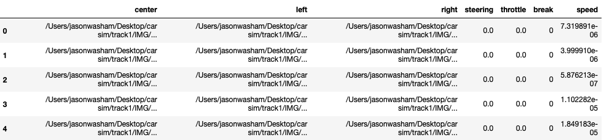
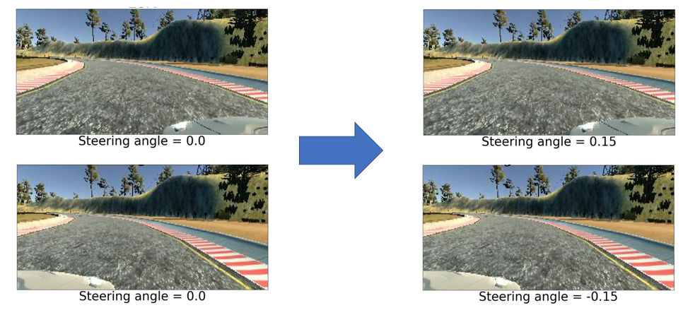
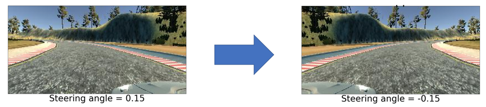
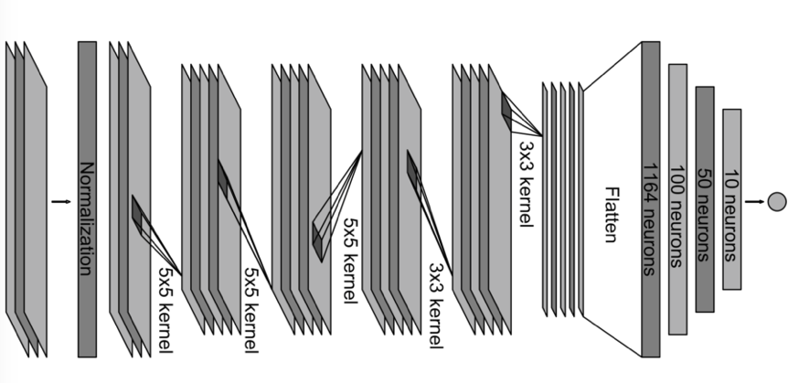
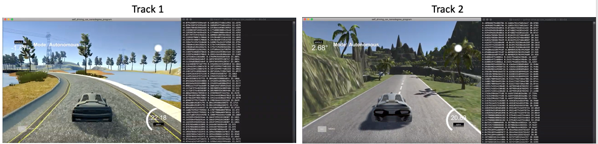

Self-Driving Car Simulation
Introduction
A self-driving car, also known as a autonomous car, is a vehical that is capable of sensing its environment and moving with little or no human input. One of the example of partially autonomous technology is Tesla's autopilot which is an advanced driver-assistance system feature that has lane centering, adaptive cruise control, self-parking, and ability to automatically change lanes with driver confirmation. Though still in its infancy, self-driving technology is becoming increasingly common and could radically transform our transportation system. I wanted to understand basic concept of the technology and how machine learning plays a part in computer vision. Therefore, the focus of this project is to develop and train a convolutional neural network (CNN) model in order to successfully complete the two different tracks in the Udacity’s car simulator.
Obtaining the Data

Udacity built a car simulator for Udacity's Self-Driving Car Nanodegree course and was released to the public in 2016. The simulator contains one simple track and one complex track. For each simulation, there will be two files. The first file is the driving log which is a CSV file that contains the center, left, right image paths with other information such as steering angle, throttle, break, and speed. The other file is a folder that contains the center, left, right images. The target variable, steering angle, has a negative value when turning left and positive value when turning right. Using the simulator, I recorded 1 lap for the first track (simple) and 3 laps for the second track (complex).
Correcting Data

There were not many cleaning processes to perform since the data was generated by the simulator. However, the left and right camera positions were off centered. Since the steering angle of the car is decided from the center position (center camera), the steering angle from the left and right camera should be corrected. If there was no correction, the car would tend to drive straight. Trying to find out the correction angle was also a problem. Since there is no set way to calculate how much the camera is off centered, I decided to test a different correction angle from 0 to 0.25. The angle that generally worked the best was 0.15.
Data Augmentation

Another problem was working with limited data. Using a convolutional neural network generally requires a large dataset because of a large number of parameters in the model that machines have to learn. Training and validating a deep learning model with only 1 lap of data can cause some problems. However, recording more laps will be time-consuming and there is no way to find out how many laps needed to satisfy the deep learning model. One of the solutions to this problem is the data augmentation technique. Data augmentation is adding more data by transforming the original images. Since neural networks aren’t smart to begin with, a poorly trained neural network would think images with minor transformation such as flips or rotation are distinct and unique images. Therefore, I add the flipped center, left and right images with corresponding inverse steering angle which doubled the size of the dataset.
Model Architecture

A convolutional neural network is a class of deep neural networks most commonly applied to analyzing visual imagery. It is also known to perform the best with image data which is why I chose to use the convolutional neural network. The network architecture consists of 10 layers, including a cropping layer, a normalization layer, 5 convolutional layers, and 3 fully connected layers. The first layer performs image cropping which crops the image to take out the sky and front part of the car and get only the image of the road. This will help the model to train faster because the image is smaller than the original image. The second layer of the network performs image normalization. Performing normalization in the network allows the normalization scheme to be altered with the network architecture, and to train the model faster. The convolutional layers are designed to perform feature extraction. The fully connected layers are designed to function as a controller for steering. The convolutional and fully connected layers are based on the NVIDA’s CNN model for the self-driving car.
Model Evaluation and Performance

The model divides the data with 80% training and 20% validation with the option of shuffle which let the model to randomly check all part of the track instead of one set part of the track. The result of the model for the first track showed the loss of 0.0192 and the validation loss of 0.0303. The second track showed the loss of 0.0877 and the validation loss of 0.0872. In terms of the steering angle, the model has an error of 0.174 degrees for the first track and 0.296 degrees for the second track. After testing, I found that the errors in the model were minimized enough where the car was able to successfully drive the two tracks in the car simulator.
Check out result for Track 1
Check out result for Track 2
Conclusion
Despite the model’s success, the model still produces an error which is not sufficient enough for the real-world applications. The small errors in the steering angle can lead to fatal car accidents and cause civilian casualties. In addition, the model needs enormous data, time and money in order to be used in real-world applications. Therefore, the research should be focusing on working with limited data, optimize the model to save time and produce less error.
For more detail analysis and code, Check out my Github